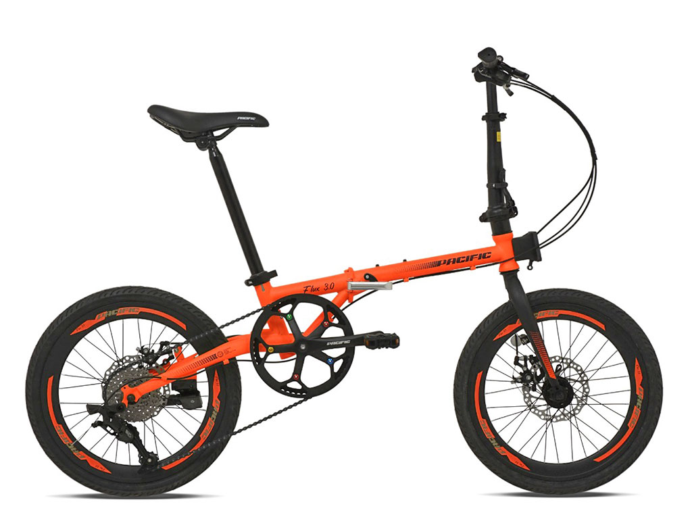
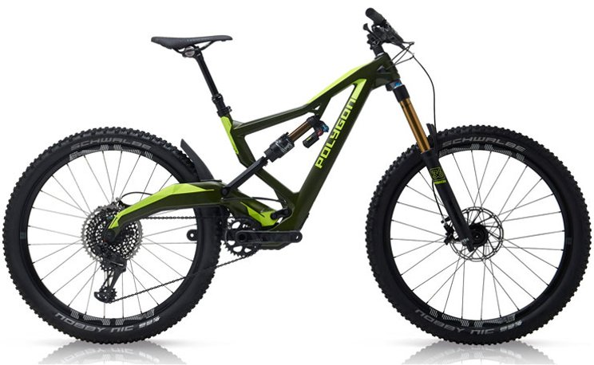
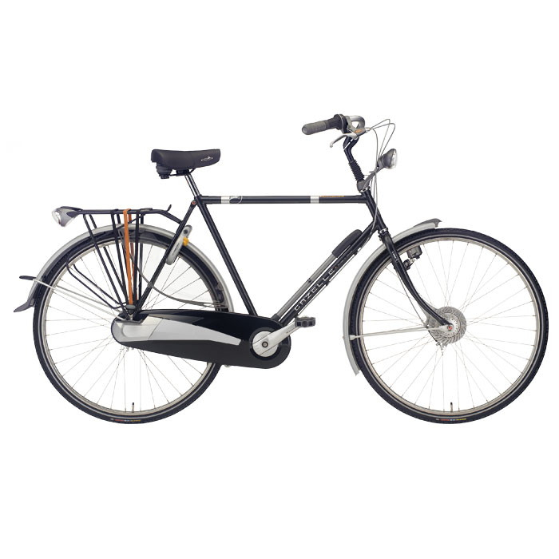
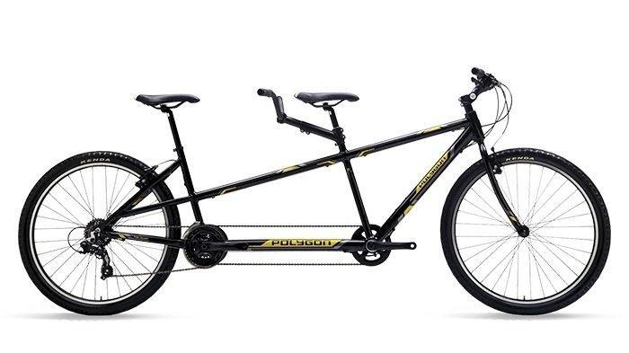

Folding Bike

Characteristics : compact, light and flexible
User type : murban society with high mobility
Place of use : urban street
Mountain Bike

Characteristics : tough structure, with suspension fork
User type : outdoor activity lover
Place of use : forest, mountains
Roadbike
Characteristics : tough and light structure, curved handlebar, acceleration features
User type : bicycle sports lovers, long-distance use
Place of use : paved road
Rodster Bicycle

Characteristics : vintage design, rear seat, signature fender
User type : vintage bike collector
Place of use : flat road with short distance, public place property
Fixed Gear Bike
Characteristics : fixed wheel mechanism, without handbrake
User type : city people for casual use
Place of use : paved flat road
BMX Bike
Characteristics : high handlebars, low seats, small wheels with thick tires
User type : young people for freestyle use
Place of use : urban public places
Touring Bike
Characteristics : features similar to road bikes, equipped with additional equipment
User type : long distance cycling
Place of use : paved road
Hybrid Bike
Characteristics : a mix of racing bikes and MTB
User type : long-distance cycling as well as off-road hobby
Place of use : paved and off-road roads
Tandem Bike

Characteristics : low seat, small tires, long body
User type : family use
Place of use : flat road
Electric Bike
Characteristics : various types and forms, electric powered drive
User type : urban community
Place of use : flat road with medium mileage